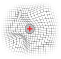
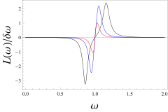

Imagine placing a charged ion, say a calcium ion in your body, into a warm fluid and switching on a magnetic field. Classical physics has a celebrated answer to the question "what happens?": nothing. The Bohr–van Leeuwen theorem, established over a century ago, guarantees that a static magnetic field cannot alter the equilibrium state of classical charged particles. The magnetic force never does work; therefore, it never changes a particle's energy and thus never shows up in equilibrium statistics. End of story. Or so it seemed.
Our recent work reveals a surprising twist. While the theorem is perfectly correct about the charged particle itself, it says nothing about the environment surrounding it. We show that the thermal bath (the sea of uncharged oscillators that keeps the ion in thermal equilibrium) quietly absorbs the influence of the magnetic field and retains it indefinitely. Uncharged bath modes begin to rotate, splitting into two groups spinning in opposite directions, and this effect persists forever.
The question is not purely academic. Metal ions like $\text{Na}^+$, $\text{K}^+$, and $\text{Ca}^{2+}$ are everywhere in biology: about a third of all proteins need metal ions to function. These ions drive nerve impulses, energy storage, metabolism, and signaling. Their translational motion is always classical, so the Bohr–van Leeuwen theorem seems to slam the door on any equilibrium magnetic effect.
Yet there is a large and puzzling body of experimental evidence showing that weak, static magnetic fields do influence biological systems. If the charged particles themselves cannot feel the field in equilibrium, where does the effect come from? Our answer: look at the bath.

We use the Caldeira–Leggett model, a workhorse of statistical physics. Picture a charged particle sitting in a harmonic potential, coupled to a large number of independent harmonic oscillators (think of tiny masses on springs all attached to the central ion). These oscillators are the thermal bath: they provide friction and random kicks (noise) that together drive the ion toward thermal equilibrium.
Now switch on a uniform magnetic field along the $z$-axis. The ion experiences the Lorentz force, which curves its trajectory but does no work. Integrating out the bath degrees of freedom, you recover a generalized Langevin equation (Newton's law plus friction with memory plus colored noise) related by the fluctuation-dissipation theorem. In the memoryless (Ohmic) limit, this reduces to the familiar Langevin equation with white noise.
Because the Lorentz force does no work, the magnetic field $B$ never appears in the energy. The equilibrium (Boltzmann) distribution depends only on energy, so it is completely blind to $B$. Equilibrium averages, including the orbital angular momentum of the charged particle, are exactly zero, regardless of the field strength.
Here is where things get interesting. During its relaxation toward equilibrium, however brief, the charged particle pushes and pulls on the bath oscillators. Once the particle has settled into its equilibrium state and forgotten the magnetic field (as the theorem demands), the bath oscillators have not.
We calculated the long-time average angular momentum of each bath mode and found an exact analytical expression. The key result: even though the bath oscillators carry no charge, they acquire a nonzero angular momentum that depends on the magnetic field and persists forever.

The plot tells a beautiful story. The bath oscillators split into two populations separated at the natural frequency $\omega_0$ of the confining potential: one group rotates clockwise, the other counter-clockwise. The angular momentum changes sign exactly at $\omega = \omega_0$ and decays as $\omega^{-4}$ at high frequencies. Stronger magnetic fields amplify the splitting.
This does not violate the Bohr–van Leeuwen theorem. The theorem speaks about the equilibrium state of the charged particle, and indeed the particle's own angular momentum averages to zero at long times, exactly as predicted. What the theorem does not address is the state of the environment. The bath is driven slightly out of equilibrium by its interaction with the relaxing Brownian particle, and this non-equilibrium imprint of the magnetic field survives indefinitely.
The magnetic field persists in the long-time limit. You just have to look for it not in the particle, but in its environment.
There is a conservation law at play. The total effective angular momentum (the particle's orbital angular momentum plus the bath's angular momentum plus a magnetic-field term proportional to the particle's mean-square displacement) is conserved. When the particle thermalizes and its contribution locks to an equilibrium value, the bath must compensate. But remarkably, the bath can also acquire angular momentum spontaneously, even when the conservation law does not require it.
Angular momentum turns out to be special. We checked the two other conserved quantities, energy and linear momentum, and found they behave quite differently.
The bath's energy does feel the magnetic field, but only as a tiny perturbation on top of the dominant thermal energy. It is a small correction, not a qualitatively new effect.
The linear momentum is even more different. While it can be temporarily transferred from the particle to the bath, it eventually dissipates away from all observable collective modes, leaking into an unphysical zero-frequency mode. In plain terms: linear momentum gets lost in the noise, while angular momentum stays and is visible forever.
Angular momentum: Transferred to the bath and retained permanently. Bath oscillators develop lasting rotation that depends on the magnetic field.
Energy: The magnetic field appears only as a small correction to the bath's thermal energy. Not a dramatic effect.
Linear momentum: Transferred to the bath but eventually dissipated away from all observable modes. It vanishes from sight.
This result opens a new window on an old problem. For over a century, the Bohr–van Leeuwen theorem was treated as the final word on classical magnetic effects. Our finding shows that the theorem has a blind spot: it correctly describes the particle but is silent about the bath. And in many physical systems, from ion channels in cell membranes to charged colloids in magnetic confinement to fusion plasmas, the state of the environment matters enormously.
For biophysics, this could be particularly consequential. If a static magnetic field can induce lasting rotational currents in the thermal environment of an ion, this might provide a classical mechanism for the well-documented but poorly understood effects of weak magnetic fields on biological systems, effects that have long searched for a theoretical home.
The Caldeira–Leggett model, while powerful, describes a bath of independent oscillators. In a real fluid, bath modes interact via viscosity. The natural next step is to study fluctuating hydrodynamic models of the bath, which also reproduce Langevin dynamics but include this additional source of dissipation. Preliminary analysis suggests the angular-momentum transfer should survive in these more realistic settings, manifesting as rotational flow in the surrounding fluid.
The deeper message is this: when a famous no-go theorem tells you "nothing happens," it pays to ask: nothing happens to whom?